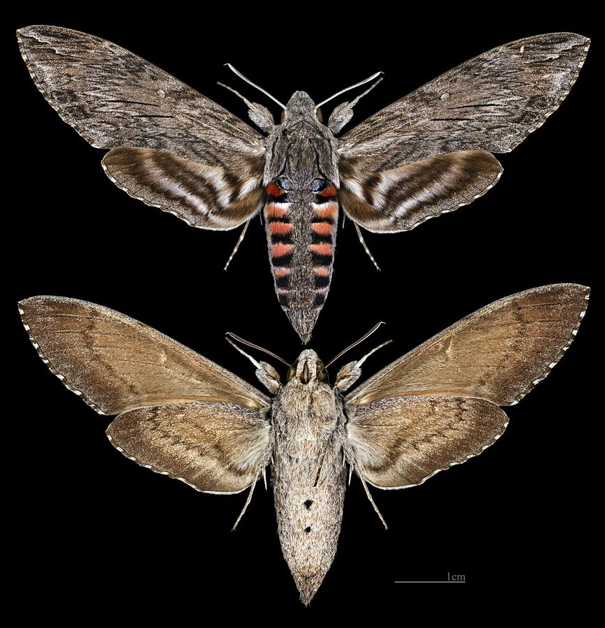

कॉन्वॉल्वुलस हॉकमॉथConvolvulus Hawkmoth
Agrius convolvuli · Sphingidae · INS-0156

- Scientific name वैज्ञानिक नाम
- Agrius convolvuli (Linnaeus, 1758)
- Family कुल
- Sphingidae
- Hindi हिंदी
- कॉन्वॉल्वुलस हॉकमॉथ
- Local names स्थानीय नाम
- convolvulus hawkmoth, hawkmoth
- Status here यहाँ की स्थिति
- native
- Movement आवागमन
- Resident, here all year
- Known from कहाँ दर्ज
- Others have published records from the wider Awadh–Purvanchal plain, none yet from Basti–Ayodhya अवध–पूर्वांचल से दूसरों के प्रकाशित अभिलेख, बस्ती–अयोध्या से अभी नहीं
- IUCN IUCN
- not evaluated
- Review समीक्षा
- audited and independently read
When to look कब देखें
Present all year. साल भर मौजूद।
Uses and possibilities उपयोग और संभावनाएँ
Drawn from the documented uses in the profile below, where each is labelled traditional, current or a research lead. All uses →
Tell it apart from इनसे अलग पहचानें
कॉन्वॉल्वुलस हॉकमॉथ / Convolvulus Hawkmoth
Agrius convolvuli (Linnaeus, 1758) — Sphingidae
कॉन्वॉल्वुलस हॉकमॉथ — यह एक मध्यम आकार की, शक्तिशाली, तेजी से उड़ने वाली रात की पतंगा है जो हमारे बागों, खेतों और बंजर इलाकों में बहुत आम दिखाई देती है। इसका शरीर भूरा या गहरा धूसर होता है, पंखों पर सफ़ेद निशान होते हैं। बिना बैठे फूलों पर ड्रैगनफ्लाई की तरह होवर करती है। कैटरपिलर बड़ा, हरा, शरीर पर सींग जैसी पूँछ होती है। सवेरे की बेल (morning glory) पर खाता है। भारत के सभी बागों में आने वाली दर्शनीय पतंगा है।
Quick Identification त्वरित पहचान
| Feature | Description |
|---|---|
| Size | Medium-sized hawkmoth; wingspan 80–100 mm |
| Colour | Grey-brown to brown; forewing with variable light and dark bands |
| Wings | Narrow, elongate; distinctive whitish cross-bands on grey-brown ground |
| Body | Stout, powerful, grey-brown with white markings on thorax and abdomen |
| Proboscis | Long, thin, coiled when at rest; unrolls to feed from flowers |
| Flight | Swift, hovering at flowers like a hummingbird; flies at dusk and night |
Field tip: A medium-sized grey-brown hawkmoth hovering at flowers in evening light, particularly at morning glory, sweet potato, and other convolvulus flowers. The white cross-bands and powerful body distinguish it from smaller moths and butterflies.
हिंदी — कैसे पहचानें: मध्यम आकार की, भूरी पतंगा। पंखों पर सफ़ेद धारियाँ। सवेरे की बेल के फूलों पर मँडराती है। बैठती नहीं, होवर करती है।
Morphology आकारिकी
Biometrics (typical measurements for northern Indian populations):
| Measurement | Range |
|---|---|
| Body length | 40–48 mm |
| Wingspan | 80–100 mm |
| Forewing length | 38–45 mm |
| Proboscis length | 40–50 mm |
Wings and body:
- Forewing: Grey-brown with distinctive white or pale cross-bands that form a characteristic pattern. The wing edge is often darker than the base.
- Hindwing: Pale grey or whitish with indistinct darker bands.
- Body: Powerfully built, stout, grey-brown with white markings on the thorax and abdomen, particularly along the dorsal line.
Proboscis: Long, thin, coiled tube, 40–50 mm long, which unrolls to penetrate deep into flowers for nectar. When not feeding, tightly coiled under the head.
Sexual dimorphism: Males typically have longer, thinner antennae than females. Females are often larger.
Adaptations: Large compound eyes for low-light vision; powerful flight muscles enabling sustained hovering.
Life Cycle / Phenology जीवन चक्र
| Stage / Month | Event |
|---|---|
| April–October | Main breeding season; females laying eggs on morning glory and related plants |
| Egg | Single egg laid on leaf undersurface of convolvulus species; hatches in 5–8 days |
| Larva | Caterpillar green, large (up to 70 mm), with a curved tail horn; 3–4 weeks to maturity |
| Pupa | Forms in soil beneath host plant; brown pupa; multiple generations per year |
| Adult | Emerges in evening; lifespan 2–3 weeks; multiple generations per year |
| Year-round | Some individuals may overwinter as pupae; emergence sporadic in cool months |
हिंदी: गर्मी में सबसे ज़्यादा; पत्तियों पर अंडे; कैटरपिलर हरा, बड़ा, पूँछ पर सींग; पाँच सप्ताह में पूरा।
Host Plants or Prey आहार
Larval host plants:
- Morning glory (Ipomoea species) — primary and preferred host
- Sweet potato (Ipomoea batatas)
- Bindweed (Convolvulus spp.) and related Convolvulaceae
- Other convolvulus family plants
Adult nectar sources:
- Convolvulus species (host plant)
- Datura, jasmine, petunias
- Various cultivated and wild flowers
- Night-blooming flowers preferred
Predators / Natural Enemies शत्रु
- Birds: Few birds prey on the toxic or defended caterpillar; night-flying birds and bats may attack adults.
- Parasitoid wasps: Small wasps parasitize caterpillars.
- Spiders: Web-building and hunting spiders entangle adults or catch caterpillars.
- Chemical defence: The caterpillar may sequester toxins, providing some protection.
Agricultural / Human Relevance कृषि प्रासंगिकता
Minor pest status: Caterpillars occasionally feed on sweet potato vines and morning glory cultivars, though economic damage is usually minor and sporadic. The species is more important as a pollinator.
Pollination: Adult moths pollinate a variety of flowers while feeding, particularly evening and night-blooming species.
Ornamental interest: In some regions, the moth is valued for its dramatic appearance and is observed by naturalists and enthusiasts.
Today. Abundant in gardens and on wayside vegetation wherever morning glory and related plants are present. Generally considered harmless or beneficial.
Research direction (a lead, not a result). Host-plant ecology and phenology of Agrius convolvuli in eastern Uttar Pradesh; pollination ecology and flower visitation patterns; larval performance on different Convolvulaceae species; geographic variation in wing coloration and size.
हिंदी: सवेरे की बेल को खाता है, पर ख़ास नुकसान नहीं करता। रात को फूलों का परागण करता है।
Expected Locally स्थानीय रूप से अपेक्षित
Not a field record. Written from published accounts for eastern Uttar Pradesh. No confirmed local sighting yet — if you have seen it, that is what the atlas needs.
अभी तक स्थानीय पुष्टि नहीं। यह विवरण प्रकाशित स्रोतों से है, किसी अवलोकन से नहीं।
To be expected in all gardens, fields, and wayside areas throughout Basti district wherever morning glory, sweet potato, or related convolvulus plants are present. Most visible at dusk and during evening and early night hours, especially from April to November. Watch for it hovering at flowers or sitting on foliage during the day. It is a regular visitor to ornamental gardens.
Distribution वितरण
Global range: Africa, southern Europe, and Asia from the Mediterranean east to India, Southeast Asia, and Australia. Widespread throughout tropical and subtropical regions.
In India: Distributed throughout the country, from lowlands to moderate elevations, wherever host plants are present.
In Uttar Pradesh: Common in all gardens, parks, and cultivated areas; abundant in rural and urban settings.
In Basti district / eastern UP: Expected wherever morning glory or sweet potato is present, which is common in villages and gardens.
Research Questions शोध प्रश्न
Anyone can investigate these | कोई भी इन प्रश्नों की जाँच कर सकता है
- How many flowers does one Convolvulus Hawkmoth visit in a single evening? / एक पतंगा एक रात में कितने फूलों पर आता है? — Follow one moth for an hour and count flower visits.
- Which host plants (morning glory, sweet potato, bindweed) are preferred for egg-laying? — Grow different convolvulus species side by side; count eggs and larvae.
- How large does the caterpillar grow before it pupates? — Measure caterpillars at different developmental stages.
- What flowers are most frequently visited: morning glory, datura, or jasmine? / किस फूल पर सबसे ज़्यादा आता है? — Set up flowers and record visits.
- How can you locate and identify pupae in the soil under host plants? — Dig carefully beneath host plants; collect and rear pupae.
Similar Species मिलती-जुलती प्रजातियाँ
| Species | How to tell apart | हिंदी | ||
|---|---|---|---|---|
| [[oleander_hawkmoth\ | Oleander Hawkmoth]] (Daphnis nerii) | Green or pink-tinged (not grey-brown); different wing pattern; feeds on [[kaner\ | oleander]] not morning glory | कनेर की पतंगा — हरी, कनेर पर |
| Privet Hawkmoth (Sphinx ligustri) | Larger; more heavily patterned; different proboscis length | जैस्मीन की पतंगा — बड़ी | ||
| [[impatiens_hawkmoth\ | Impatiens Hawkmoth]] (Theretra oldenlandiae) | Much smaller; different wing pattern; feeds on different plants | बालसम की पतंगा — छोटी |
Field rule: A medium-sized grey-brown hawkmoth with white cross-bands on the wings, hovering at morning glory or related flowers like a hummingbird, with a long coiled proboscis, is Agrius convolvuli.
Taxonomy & Classification वर्गीकरण
Original description. Described by Linnaeus in 1758 in Systema Naturae, 10th edition, Vol. 1, p. 491. Type locality is Asia (India). The genus name Agrius comes from Greek, meaning "savage" or "wild." The specific name convolvuli refers to the primary host plant, morning glory (Convolvulus/Ipomoea).
Subspecies. Multiple subspecies recognized. The Indian form is Agrius convolvuli convolvuli (nominate).
Family and order placement. Order Lepidoptera, family Sphingidae (hawkmoths). The Sphingidae are powerful, fast-flying moths with robust bodies and elongate wings, excellent hovering abilities.
Phylogenetic notes. Agrius is a genus of two species, A. convolvuli and A. attropos, with A. convolvuli being the more geographically widespread and generalist species.
IUCN status rationale. Not formally assessed. Abundant and widespread; no conservation concerns.
Photo Gallery फोटो गैलरी
No photos yet — add field photos to media/species/convolvulus_hawkmoth/ and run node scripts/sync_photos.js.
Wanted:
- Adult hovering at morning glory flower (सवेरे की बेल के फूल पर)
- Adult at rest on foliage
- Large green caterpillar on morning glory leaf
- Pupa in soil (if accessible)
References संदर्भ
- Linnaeus, C. (1758). Systema Naturae. 10th edition, Vol. 1, p. 491. [original description]
- Pittaway, A.R. (1993). The Hawkmoths of the Western Palaearctic. Entomographica, 3, 1–288. [comprehensive hawkmoth review]
- Datta, S. & Das, B. (1989). Agrius species and their host relationships in India. Indian Journal of Entomology, 51(2): 165–172.
- Kehimkar, I.D. (1994). Insect pollinators in Indian agroecosystems: A survey and recommendations. Indian Journal of Entomology, Supplement: 23–34.
- Nayar, K.K., Ananthakrishnan, T.N. & David, B.V. (1989). General and Applied Entomology. 2nd edition. McGraw-Hill, New Delhi.
- GBIF Occurrence Data — Agrius convolvuli, Asia (2010–2025). GBIF taxon key: 7659008.
Source file: species/fauna/insects/convolvulus_hawkmoth.md